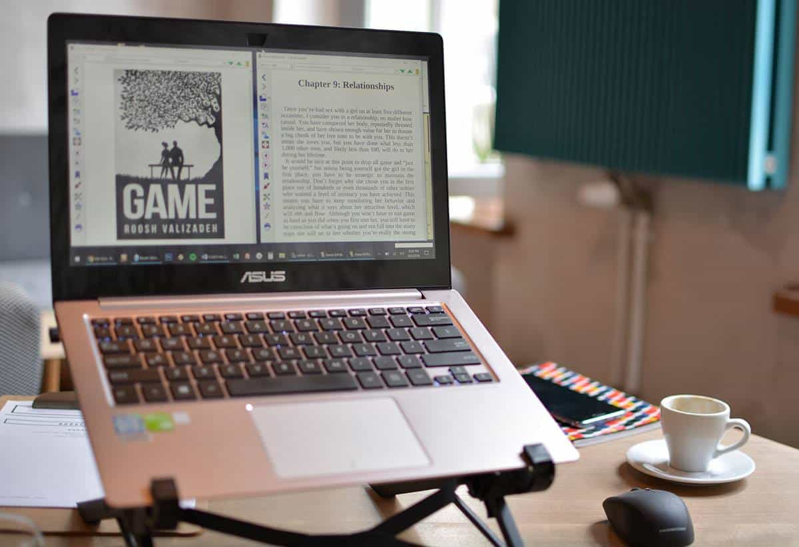

Daryush "Roosh" Valizadeh created ROK in October 2012. You can visit his blog at RooshV.com or follow him on Twitter and Facebook.


Starting on Friday, September 7, Amazon has gone on a rampage and banned the paperback and Kindle editions of nine of my books, including my new release Game. The sales pages now give you an error message. Despite repeatedly trying to get answers from Amazon via phone and email, they will not tell me why the books have been removed.
UPDATE: I have also had my entire book catalog banned from Barnes & Noble and Kobo. I added their termination emails to the bottom of this article.
On Friday I received an email from both Amazon’s Createspace (paperback) and Kindle Direct Publishing divisions that stated three of my books have been removed because they were in violation of “content guidelines.”
The most relevant parts of their guidelines state the following:
Pornography
We don’t accept pornography or offensive depictions of graphic sexual acts.Offensive content
What we deem offensive is probably about what you would expect.Illegal and infringing content
We take violations of laws and proprietary rights very seriously. It is your responsibility to ensure that your content doesn’t violate laws or copyright, trademark, privacy, publicity, or other rights. Just because content is freely available does not mean you are free to copy and sell it.
I contacted them by phone when I first got the notice, but they stated that the team in charge of removing books doesn’t have phone support. Through email, they told me they could not give me any details.
On Sunday, five more books were banned.
Then on Monday morning I wake up to find that my new book Game was also banned.
I called again but was given the same runaround. The phone rep could not give me details or connect me with someone who could help.
I believe the bannings began because the launch of Game was extremely successful. I sold 2,000 books in the first two days and hit the top 700 on Amazon paperback on the first day. Even before Friday’s launch, Game was already in Amazon’s top 10,000. As far as I know, Amazon didn’t receive a single complaint about the content, but they removed it anyway.
My dating books contain instructional details on having sex, and contain naughty words like “penis” and “vagina,” but they don’t promote violent or degrading behaviors like other books Amazon has for sale. Stephen King’s compilation Four Past Midnight contains the novella Library Policeman. It features the prolonged anal rape of a young boy, and is freely available on Amazon.
When Sam a little boy, he was returning some overdue books when a, man stopped him outside the library. The man claims to be a policeman, and orders Sam to come with him to pay the fine on his books.
The fine ends up being a prolonged anal rape of the boy, and I do mean prolonged. The grown man forces his massive penis into Sam’s ass as he’s forced against a wall, all described with intimate detail of almost every thrust for four whole agonizing pages… King keeps it going and going and going. It may in fact be the most detailed sex scene in all his work, save one. [Source]
One of the best selling books of all time, 50 Shades Of Grey, features numerous graphic scenes of sexual abuse, including one scene where the sexy male character bludgeons a female. It is freely available on Amazon.
“Suddenly he grabs me, tipping me across his lap. With one smooth movement, he angles his body so my torso is resting on the bed beside him. He throws his right leg over both mine and plants his left forearm on the small of my back, holding me down so I cannot move . . . He places his hand on my naked behind, softly fondling me, stroking around and around with his flat palm. And then his hand is no longer there . . . and he hits me — hard.”
Another book that Amazon sells is called Just Fuck Me! It features extremely graphic depictions of sex and “getting fucked.” It is freely available on Amazon.
Dozens of books that feature violent rape are not only available on Amazon, but are featured within lists on Amazon-owned Goodreads so shoppers can find them easier.
There are hundreds of other pornographic books that depict sex in the most graphic way possible, with covers that are barely safe for work, and they are all still available.
None of my books contain child rape scenes, physical abuse, pornography, or sexual violence, and yet they were banned.
Were they banned because they were effective at helping men? Was it because executives at Amazon disagree with my political opinions? Was it an action from a rogue employee? They won’t tell me. Whatever the case, someone in the company clicked the delete button and I’m supposed to accept it, but it’s hard to do that when your livelihood depends on the basic assumption of fair business practices.
I believe I deserve answers from Amazon. Until then, I will begin researching alternative ways to sell paperback copies to my readers.

Thankfully, I have a web store where I sell all 19 of my ebooks and audiobooks that you can order with a credit card or cryptocurrency. If you want to support me and my new book Game, you can learn more about it here or click the links below to grab your copy. I’m extending the special deals that were supposed to end today.
The instantly downloadable ebook edition costs only $13 and contains unrestricted PDF, ePUB, and MOBI files that can be viewed on unlimited devices. After submitting your payment, you’ll be immediately forwarded to the book’s download page…
The audiobook + ebook edition costs only $21 and includes both the ebook package and the 13-hour audiobook in unrestricted MP3 format that is narrated by myself. Hear me say lines in the same way I deliver them to women…
Click here to view the full description of Game at Roosh V Store.
The censorship is intensifying. I’m not the only one who noticed the banning of Alex Jones on just about every tech platform in existence. I thought our tech overlords would first censor political figures on the right in preparation for the American midterm election this November, but it’s clear that even if your work doesn’t contain anything remotely political, like my dating books, they will still go after you.
Amazon and other tech companies have no moral qualms about hurting people’s lives under the guise of eliminating “hate speech” or “offensive” content without objectively defining what those terms actually mean. The drive to censor anyone with an opinion not sanctioned by a global corporation will only get worse, but as long as I have a mouth, I will continue to speak.
UPDATE:
Here’s a solid analysis from the Spectator:
We are living in an Orwellian dystopia. Democrat members of Congress advocate harassment of their opponents, and Republican congressmen are targeted by assassins and GOP candidates are assaulted by knife-wielding lunatics, yet the so-called “mainstream” media insist that it is the Right, not the Left, which is dangerous. In this bizarre mirror-reverse world, atheists, homosexuals, violent anarchists and vehement man-hating feminists are free to say and do what they please, but a guy who tells other guys how to be successful with women is demonized like Emmanuel Goldstein in Nineteen Eighty-Four. Instead of free speech being suppressed by an all-powerful government, the enemies of freedom are gigantic multibillion-dollar Internet companies eager to appease swarming squadrons of social justice warriors (SJWs) who bombard them with complaints about alleged purveyors of “hate.”
I also did interviews with Alex Jones, Paul Joseph Watson, JF Gariepy, and Luke Rudkowski.
Below are the termination emails that Barnes & Noble and Kobo sent me. They each banned all 19 of my books, even Free Speech Isn’t Free, which does not have any sexual or graphic content.
This article was originally published on Roosh V.
Read Next: Game – How To Meet, Attract, And Date Attractive Women